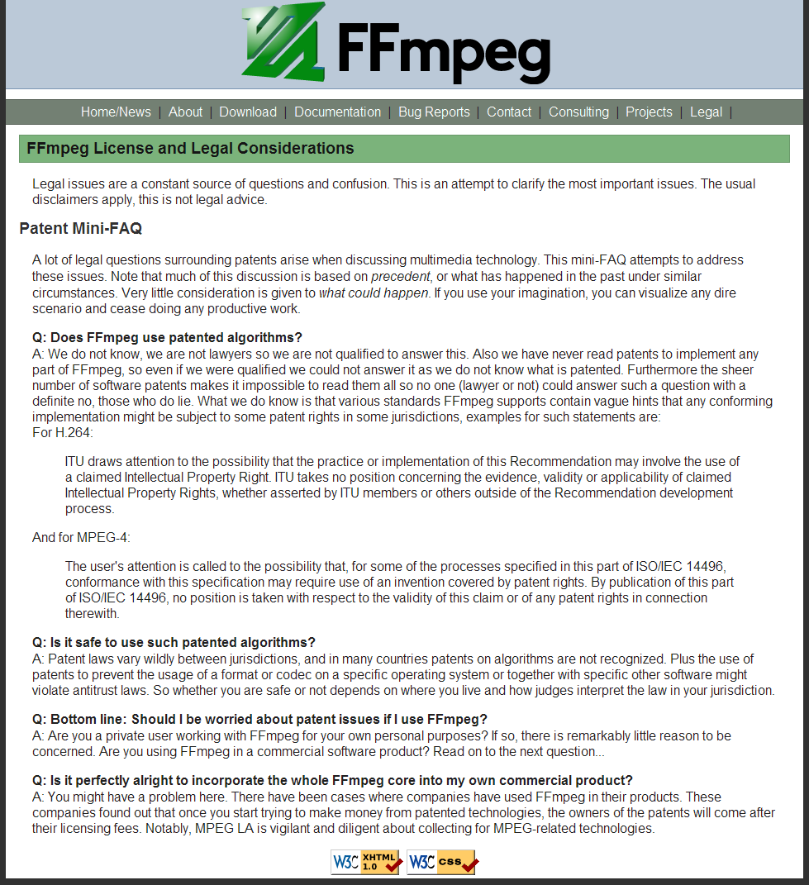
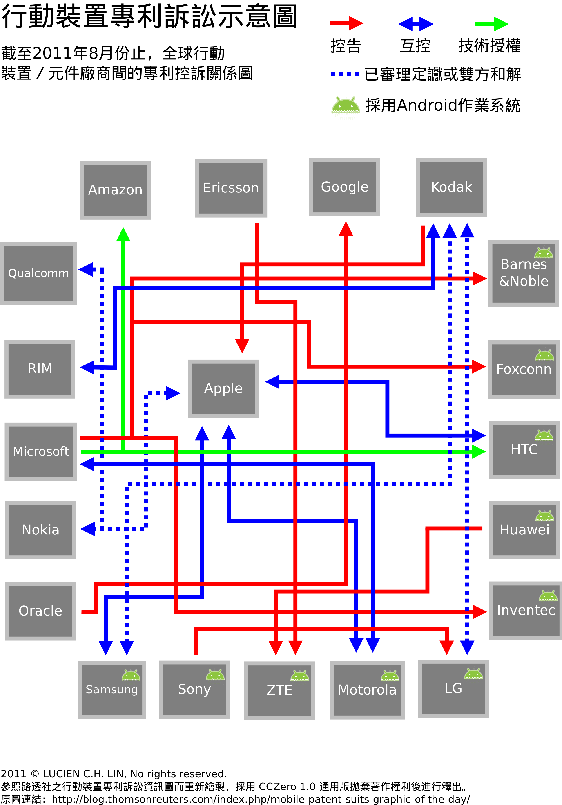

感謝您對「自由軟體鑄造場」的支持與愛護，十多年來「自由軟體鑄造場」受中央研究院支持，並在資訊科學研究所以及資訊科技創新研究中心執行，現已完成階段性的任務。 本網站預計持續維運至 2021年底，網站內容基本上不會再更動。
也紀念我們永遠的朋友 李士傑先生（Shih-Chieh Ilya Li）。
也紀念我們永遠的朋友 李士傑先生（Shih-Chieh Ilya Li）。
Legal Column  備位啟動的自由開源專案軟體專利
備位啟動的自由開源專案軟體專利
Open Source Software license
 We provide Open Source Software license and legal materials via this page.
We provide Open Source Software license and legal materials via this page.
備位啟動的自由開源專案軟體專利
Created at Thursday, 03 November 2011 10:30 Last Updated on Thursday, 24 November 2011 14:58
部份的自由開源軟體專案開發者，慣常表達出其嫌惡軟體專利 (software patent) 的立場，因為若是任由軟體專利制度發揮到極致，很可能會直接扼殺自由開源軟體未來的接續發展，然而、近年許多跨足自由開源軟體商業加值應用的產業公司，也慣常的會透過專利申請的手段來保障其商業優勢，此種專利申請模式、已經是在業界行之有年並且體系性的被固定維持，若說是為了因應自由開源專案的應用而要其突然式的改弦易轍，亦有現實上的困難。有鑑於此、本文要討論的議題是，從軟體社群與產業公司這二個不同的立場出發，觀察其對於軟體專利反對與認同、弱化與強化不同態度之間的理由與作法，並透過這些資訊的分析，協助國內自由開源軟體專案的社群開發者與商業應用公司，能更深入了解自由開源軟體所涉及的專利問題與可能的解決方式。 軟體專利的概念與自由開源軟體有本質上的不相合
專利簡單來說就是「可供產業利用之技術思想 (technical concept)」經過國家智財機構審核通過後，權利人被法律賦予一定期間的「專門營利特權」，從而在這段期間內，唯有此一專利權人有商業利用此項專利的資格與地位。而專利權與著作權第一個大的分歧點在於，專利權本質上具有強大的獨占排他性，它不像著作權一般可以被其他人在未獲授權的狀態下重新創作（註一），而自由開源軟體專案，強調的是將軟體後續修改與散布的權利預告授權給後手，如此一來、專案就可以透過多人接力共工的方式，被群策群力地撰寫的更臻完整；然而、若是此一軟體專案內含軟體專利，但其專利權人並未將專利權一併公眾授權給收受程式的後手，那麼這樣的軟體專案在後續的修改與散布上，仍然會受到專利權所引發的層層限制，而不能夠被後手自由地接力改作。從而若是將軟體專利編寫進自由開源專案，又未配套處理相應的專利授權問題，則相當程度已然拘束這些專案後續再被修改與散布的可能性。以前在自由開源軟體的世界裡，並沒有軟體專利的問題，這是因為過往「純軟體性質」的技術思想，並不被認為具有專利適格的地位，但是美國自 1998 年 State Street Bank & Trust v. Signature Financial Group 一案，開始肯定了軟體專利的可專利性（註二），此後、軟體專利被摻進具有共同開發、自由散布特性的自由開源專案後，開始磨擦出一些與軟體自由 (Software Freedom) 理念不同調的火花，而後這些火花開始蔓燒，從而許多自由開源軟體社群的資深參與者，認為應該要認真因應軟體專利的未來發展趨勢，並提出相關的轉化方法，以避免自由開源軟體日後不能再以自由無拘束的開源方式進行共工編寫與後續散布的情況發生。

▲ 圖1 FFmpeg 專案對於自由開源專案在專利方面的警示說明，2011 年 10 月 18 日截圖於右列網址：https://ffmpeg.org/legal.html
從前手後手授權關係解決內部衝突的方式
由於軟體專利的概念，與自由開源軟體容許後手自由修改的理念，在本質上確有若干不合處。所以目前在自由開源軟體領域裡，對於軟體專利的轉化方法可大分為三種，第一個方式是籲請支持軟體自由理念的開發者（潛在的專利技術發明人），在其將軟體元件以自由開源軟體的授權方式釋出後，可以一併公開揭露尚未登記為專利的技術內容，那麼這些內容將因為公告週知而成為專利制度中的先前技術 (prior art)，其後便不能夠再被其他人拿來申請專利，並可以之為撤銷他人其後近似專利的重要引證，例如 Linux Defenders ™ 即為一個持續進行專利先前技術曝光的組織（註三）；第二個作法則是在新版本的自由開源授權條款中加入專利授權的預設機制，例如 2004 年 1 月發布的 Apache-2.0 與 2007 年 6 月定稿的 GPL-3.0，皆設有此類的專利授權條款，如此一來、以這些授權條款釋出軟體專案的權利人，將可以同時將賦含於程式碼中的著作權與專利權，一併以公眾授權的方式散布出去，以讓收受程式的後手可以安心修改並重製利用這隻程式。而第三個轉化方法，則是透過在若干新版本的自由開源授權條款中，添加過往沒有的軟體專利平衡、抑制，以及反制條款，這類的軟體專利權抑制專款，指的是當自由開源軟體的使用者或修改者等被授權人，若是反過來控告散布此軟體的前手、原著作權利人或是該軟體的其他使用者侵害專利權時，則此軟體前手或原著作權利人之前授與此位興訟者的專利權利，將會視所適用的條款不同而產生被追索、抑制，或是授權反制等等不同的法律效果（註四）！也就是說、當某個自由開源專案的使用人提出專利訴訟時，這個專利侵權的主張可能會因為符合條款預設「轉化機制」的條件，而產生中和、抑制，或授權反制等等效果，但要啟動這樣的軟體專利轉化機制，首要前提是此一興訟者也身處該自由開源專案的前手後手授權供應鏈裡，才能夠透過授權條款的預設規定來產生這樣的抑制或反制效果。
透過協議手段與結盟解決外部衝突的方式
然而、若僅僅是從授權人所擁有技術的角度，來著手處理軟體專利的問題是不夠的，專利權與著作權在軟體創作上的第二個大的分歧點，在於專利內容本身常常會是一個抽像的技術概念，以致於自由開源軟體專案的創作人，極可能會在「完全不知情、或是並不完全知情的狀態下」，撰寫出某個與他人既存專利非常相近的技術方法，這樣的狀況、若是專案在開發過程中又缺乏嚴謹登載的開發記錄（註五），結果甚至可能是、該軟體專案在大舉商業化利用之際，才被既存專利的權利人控訴惡意侵權，而必須承擔需支付此專利權利人高額侵權賠償金的後果。於是、為了處理這樣防不勝防的「第三人專利」問題，許多的商業公司會透過專利互利協議或是專利產業聯盟的方式，來擴大自己的專利保護圈，以群體的力量來抵禦未來可能發生的專利侵權風險。有些自由開源碼軟體公司會直接與專屬軟體 (proprietary software) 公司簽訂「互不提出專利侵權主張的契約」，例如 Novell 在 2006 年底、Linspire 於 2007 年中與微軟簽訂的技術開發合作契約就屬於此種協議；但有鑑於近年專利侵權訴訟的規模日漸擴大，許多複雜的專利爭議、其爭訟範圍會擴大到讓數家國際型企業共同涉訴，於是部份的自由開源軟體推動組織與商業化運用自由開源軟體的公司，也開始透過專利捐獻、專利公眾授權，或是產業聯盟與組織聯盟的方式，來成立抵禦專利侵權的專利池 (patent pool)，以加大專利保護圈的屏障範圍。例如 OSDL (Open Source Development Labs) 是一個在 Linux Foundation 支持下發展的專利蒐集計劃 (Patent Commons Project)，其透過多方專利吸納與公眾專利授權的方式來建立開放共享的專利資料庫，並將這些資訊以分類彙整的方式提供出來，以降低業者商業化運用自由開源軟體，所可能涉及專利侵權的風險層級；而 OIN（Open Invention Network，註七）是一個專注於 Linux Kernel 相關專利收集與吸納的組織，由許多跨國的商業公司共同捐款成立，目的是要透過會員互相簽訂協議的方式，來保護 Linux 作業系統的商業化發展，未來不會受到專利互控的阻礙。
非無效但居於備位發動地位的自由開源軟體專利
綜上所述，軟體專利這個議題在自由開源軟體的世界，雖然多數的軟體開發社群持反對意見，但是評估現實環境、專利制度仍然是一個由各國司法制度與智財部門賦予其正當性的法定權利，其雖在審核與施行上迭有偏頗與失衡的弊病，但仍然是一個行之有年且難以在短期之內被通盤調整的跨國性法律制度。也由於這個原因，自由開源專案若是涉及商業面、開發公司勢必會循例進行專利技術的申請，近年來、由於智慧行動裝置的掘起與風行，如下圖所示、許多跨國商業公司亦紛紛涉入了此類產品的專利控訴循環，而由於這些智慧型嵌入式裝置，多以自由開源平台為其作業系統，那麼也引發了不少與自由開源軟體應用相關的專利授權探討。

▲ 圖2 行動裝置專利訴訟示意圖，參照路透社之行動裝置專利訴訟資訊圖而重新繪製，採用「CCZero 1.0 通用版」拋棄著作權利後進行釋出。原圖請參照右列連結：https://blog.thomsonreuters.com/index.php/mobile-patent-suits-graphic-of-the-day/
那麼、從理念與現實這二個座落天平兩端的不同立場，我們應該如何看待軟體專利這個議題？筆者對此議題的個人觀點簡列要點如下。
一、對自由開源軟體專案的社群開發者而言：
1、若在開發歷程中，發掘到具有「可專利性」的技術方法，建議仍然要採積極作為將其公布至自己網站，或是 Linux Defenders ™ 這類協助專利先前技術曝光的組織，因為若不是如此、嗣後這個專利可能會被他人註冊，甚至日後影響到您自行使用該技術開發後續軟體元件的自由。
2、選用較新式且預設有專利授權機制的自由開源授權條款來釋出您的軟體專案，因為這些授權條款已經就軟體專利問題預做佈局與配置，較不會有授權涵蓋密度不夠的問題產生。
二、對產品化自由開源專案的商業開發者而言：
1、若在開發歷程中，發掘到具有「可專利性」的技術方法，若確信公司並沒有意願申請這個技術方法成為專利客體，則可以比照 IBM、Siemens，與 Motorola 這些大型商業公司的作法，透過 Prior Art Database 這樣的機構（註七），將這些技術方法以公示的方式散布出來，如此一來這些技術方法會因為已被「公告週知」而無法再被原發明者拿來申請專利，但同時也保障這些技術方法不會被其他競爭對手拿來申請專利。
2、如果認為所發明的技術方法具有可商業化的未來性，建議仍然要積極申請這些技術方法成為專利客體，並視公司在商業界的供應鏈關係，加入適合的產業聯盟，以加大自身所受專利保護圈的屏障範圍。
3、了解新式的自由開源授權條款，預設有專利授權機制，如認為這些預設機制不符合公司本身的智財管理策略，則亦可以參考 Google WebM 專案的作法，其雖然以輕簡的 BSD-3-Clause 來釋出 WebM Project 的程式源碼，但同時併以額外的專利添附條款（Additional Patent Rights Grant，註八），以就專利授權方面的問題進行配置，這也是一種實際可行的好方法。
但當然、許多業界的朋友也常有下列的疑問：已經以自由開源授權方式釋出的軟體專案是否仍有申請專利技術的必要？若是專利權利隨著程式碼的散布而釋出，那麼掌有這個專利權對商業散布者是否已然無效，而不能對產品商業模式的運作帶來實質的助益？
並不是如此！從前後手關係解決內部衝突的角度來觀察，自由開源專案裡蘊含的專利技術，仍然具有備位啟動的效力。所謂的備位啟動是說，專利權人若是在後手「合法地依照條款的狀況下」發動專利訴求，則發動者依照所適用自由開源條款的不同，而可能產生權利被追索、抑制，或是授權反制等等不同的不利效應，但如果是在後手「非法地違反條款的狀況下」發動，則依照多數自由開源授權條款的設定，此時逾越條款份際的利用者將罹於失權（註九），而不再具備被合法授權的地位，那麼專利權利人對此後手所發動的專利訴求，便不再受到原授權條款的抑制，而得以備位復甦、並請求該後手無權利用相關專利的損害賠償金；而從結盟解決外部衝突的角度來觀察，此時商業公司預先申請的專利技術，亦可於聯盟關係裡「備位而後用」，也就是說、該專利權對於產業聯盟內的合作廠商並不會主動發揮效力，但若是聯盟成員因第三人專利問題而涉訴時，便有機會援用其他會員已申請的專利，對控訴方提出反訴而產生實質上「以訴止訴」的恫嚇作用。
所以、綜上所述，內含於自由開源專案裡的專利權利，並不會因為其散布上依照自由開源軟體的授權規則來走而完全受到抵銷，當自由開源軟體授權循環鏈、產業聯盟鏈的每個成員，都依照軟體的授權規則來利用這個專利時，確實此一專利可能會處於無法主動發動的冷凍狀態，但當授權循環鏈裡的內部成員，以逾越條款授權幅度的方式來利用此一專利，或是產業聯盟鏈外部的成員，以第三人專利的立場來控訴此一聯盟成員所使用的技術涉及專利侵權，則這些之前冷凍的專利技術，皆將備位地啟動其各項依法本可主張的權利地位，所以本文稱其為「備位啟動的自由開源專案軟體專利」，以表彰其受到自由開源理念與授權規則所拑制，但仍然在法律制度上得以備位啟動的特殊地位！之所以會有這樣迂迴的應用方式，這是因為軟體專利與自由開源軟體的本質並不完全相合，但是專利制度存在並被廣泛國際化的事實無法被視若無睹，其仍然是一個受到各國政府保護且持續發揮效力的權利機制，因此在面對這樣的客觀環境，無論是自由開源軟體社群或者是跨足自由開源軟體應用的商業公司，都應該採取適宜的對應措施，提前將必要的先前技術進行公眾曝光，或是預先掌握若干關鍵專利技術，才能於涉訴之時善用這些措施成為談判籌碼，來降低可能產生的專利侵權風險。此外，面對軟體專利的態度，也應該要由被動地排斥，轉為主動地認識，並視實際情況決定是否積極地申請相關的軟體專利，如此在有使用者非法違反自由開源授權條款的循環互惠機制時，這些軟體專利才能夠備位地被啟動，成為防護自由開源軟體正常化利用的重要屏障。
註一：依我國著作權法第 10-1 條的規定：「依本法取得之著作權，其保護僅及於該著作之表達，而不及於其所表達之思想、程序、製程、系統、操作方法、概念、原理、發現。」所以受到著作權保護的客體，在經過非著作權人的學習吸收得其概念後，便可以不抄襲的方式來重新創作新的作品，就軟體程式碼而言、這種將著作權客體重新創作的過程亦為法之所允，重點是不可使用機械式自動編譯的方式，或是用全自動轉譯的手法來重現他人撰寫的程式碼。而因為專利權保護的標的為「技術思想」，技術思想本身即為一種抽象的概念，所以若此抽象的概念已為他人註冊專利並引證實作方法，則其他發明人便無由重新以其他形式來重構這個概念。
註二：關於美國核發軟體專利的相關歷史進程與主要爭議，可參照右列專文，「The History of Software Patents: From Benson and Diehr to State Street and Bilski」：https://www.bitlaw.com/software-patent/history.html
註三：此類別的著例可參考 Linux Defenders ™ 專案轄下的子計畫「Defensive publications」：https://www.defensivepublications.org/
註四：此類軟體專利相關的抑制規定差異性頗大，會視所適用的條款而產生權利被追索、抑制，或是反制等等不同的效果。以下即舉MPL-1.1、GPL-3.0，與Apache-2.0授權條款來做基本例示。
1、Mozilla Public License 1.1 第 8 條第 2 項的權利追索條款：MPL-1.1 授權元件的使用人若是對前手或是元件的原始創作人提出專利侵權訴訟，則：
- 必須在 60 天內，與被訴的前手與原始創作人重新協議該元件原依 MPL-1.1 第 2 條第 1 項與第 2 條第 2 項所無償授權予後手的授權費用，因此時後手已向前手提出專利侵權訴訟，故原無償授權予後手的相關權利，依條款規定會溯及使用之初及向後重新估算一個新的授權費用；而若 60 天內雙方無法經過協議核定一個彼此皆認可的授權費用，而提出專利侵權訴訟的後手也沒有撤銷告訴時，則前手原透過 MPL-1.1 授權予後手的所有權利，便會在 60 天通知期滿後向後終止。
- 即使後手提出專利侵權的客體與前手依 MPL-1.1 授權釋出的軟體元件無關，但因前手已然為後手所提發的專利侵權訴訟所波及，故其原依 MPL-1.1 授權予後手的權利，溯及至後手使用此一軟體之初向後終止。
2、GNU General Public License Version 3 第 11 條第 4 項的專利抑制條款：其指稱 GPL-3.0 對於原始創作人與貢獻者自主寫進軟體的專利權，設有「禁止向後手聲明專利侵權的限制」。也就是說、任何人將其專利權寫入 GPL-3.0 授權的程式裡，即等同向後允諾日後不據此專利權，向依照 GPL-3.0 授權方式利用此一軟體的使用者，提出專利侵權的法律訴訟。
3、Apache License, Version 2.0 第 3 條後段的專利反制條款：Apache-2.0 授權元件的使用人若是就此元件，對任何一個法律主體提出專利侵權訴訟的話，無論其訴求為直接的或間接的專利權侵害，則使用人本依 Apache-2.0 得以在此元件上享有的專利權，便即刻於此專利訴訟提起之日向後終止。
註五：軟體專案中屬於著作權利的部份，必定是由軟體的創作人或是修改者自主撰寫到軟體專案裡的，所以只要不事涉程式碼的抄襲、那基本上就不會有誤植他人程式碼的狀況發生；但是專利權的內容常常是抽象的技術方法，而其本質又具有強大的獨占排他性，一個技術思想若是已經為先發明人註冊專利權，嗣後他人就算是獨立自主地發展出相同的技術內容，此時先發明人仍然有資格可以排除後者利用這個相同技術，並且要求後者必須在支付一定數額的專利授權金之後，才可以利用此一技術在其商業產品上；當此種狀況發生時，對於技術的後發明人而言，嚴謹登載的開發記錄並不能讓其擁有可以和先發明人專利對抗的地位，但卻可以主張研發過程乃是善意行為，而不會被認定為我國專利法第 85 條第 3 項所規範之故意侵權，而被裁定損害額以上之賠償金。
註六：關於 OIN 進一步的介紹資訊，可參照葛冬梅「OIN 低調努力，專利交互授權保障商用自由軟體的未來發展」此篇專文：https://www.openfoundry.org/tw/enterprise-application/2320-oin-
註七：Prior Art Database 是專職的技術揭露網站，其成立目的是要保障某些不欲申請專利的技術方法能夠被公開揭露，該網站並以精化技術分類、協助出版曝光等手段，讓更多人能簡易的查找與認識到這些技術方法，以避免其他商業競爭者其後將這些技術登記為專利，而阻礙到原技術發明人後續使用這些技術，其官網連結如右所列：https://priorartdatabase.com/
註八：WebM Project 是以 BSD-3-Clause 條款來處理著作權方面的授權問題，併以自行撰寫的額外專利授權條款來處理專利權方面的授權問題，其授權方式總說明頁面請參照右列網址：https://www.webmproject.org/license/
註九：多數的自由開源軟體授權條款，皆以符合授權「前提要件 (condition)」與相關的「義務性要求 (obligation)」，作為得到權利人合法授權的交換條件，部份的授權條款如 GPL-2.0、GPL-3.0，甚至明述授權終止 (termination) 的相關狀況；從美國聯邦上訴法院就 ROBERT G. JACOBSEN v. MATTHEW KATZER AND KAMIND ASSOCIATES, INC. 一案所提示的見解來看：https://jmri.sourceforge.net/k/docket/cafc-pi-1/AppellantsBrief.pdf，亦可推知部份重要的自由開源軟體授權前提要件若沒有被使用者遵守，則此使用者可能自始便不被認定得到合法授權，從而也就不能援引該條款的專利保護條款，來主張自己使用該軟體的行為一併得到專利權人的預先授權了。
Open Source Software Foundry‧ Best Viewed with IE7.0 or Firefox2.0 above, 1024x768 Resolution. E-Mail：contact@openfoundry.org
Address：No.128, Sec.2, Academia Rd., Institute of Information Science, Academia Sinica, Nangang District, Taipei City 11529, Taiwan (R.O.C).
Privacy Policy. Terms-of-use
Address：No.128, Sec.2, Academia Rd., Institute of Information Science, Academia Sinica, Nangang District, Taipei City 11529, Taiwan (R.O.C).
Privacy Policy. Terms-of-use